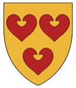

Riddare.
omkring 1250.
efter 1305.
Kyrning med tre sjöblad i vapnet var en dansk uradelsätt från Östdanmark känd från 1272 genom Nils Knudsen ’Hallandsfar’. Han dömdes 1287 fredlös för delaktighet i dråpet på konung Erik Klipping och flydde därefter till Norge. År 1295 fick han lov att återvända till Danmark, men dömdes 1305 ånyo skyldig till nämnda dråp. Han var nära knuten till ätten Porse och tog sitt vapen med tre sjöblad från dem, men härstammade säkerligen inte från ätten Kyrning. Finn Gaunaa har antagit att Knud Nielsen i Halland var fader till Niels Knudsen och Peder Porse (död efter 1287).
Nämnes tidigast 1279, då han sålde gods på Helgenaes (Århu. DAN) till kapitlet i Århus, och 1282 till samma kapitel gav gods i Stövring hd (Ålbo. DAN). Var 1284 en av dommarna, som i Nyborg satt till doms i en arvstvist mellan kung Erik och hertig Valdemar på den ena sidan och drottning Sofie, Ingeborg av Norge samt fröknarna Jutta o Agnes på den andra. Dömdes 1287, jämte sin far, i Nyborg på Fyn (DAN) fredlös för delaktighet i dråpet på den danske kung Erik Klipping i Finderups lada på Jylland föregående år, varpå han rymde till Norge där han fick en tillflykt hos den norske kungen. Fick vid kungamötet på Hindsgavl 1295 sitt gods tillbaka. Var möjligen död då han 1305 i Helsingborg pånytt dömdes för kungamordet.